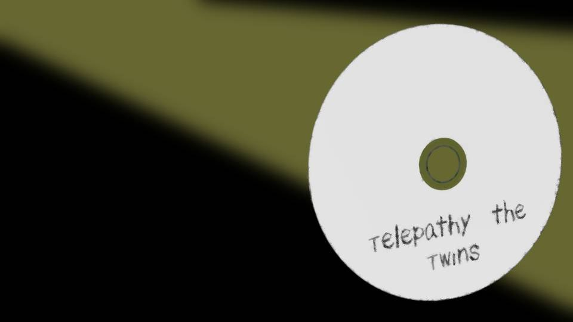
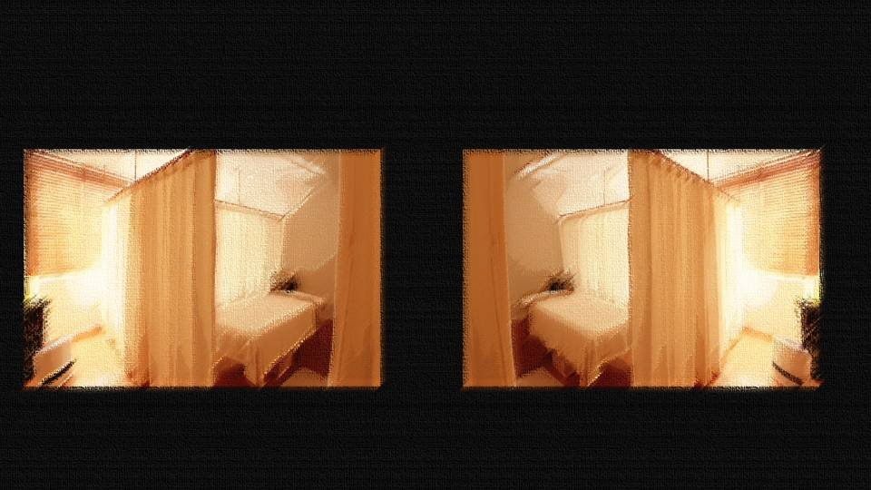
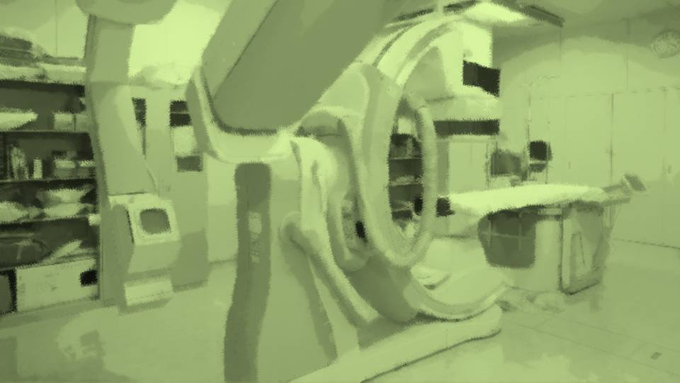

Script 00001715

1枚のDVD。
これは、ある消息筋から入手した極秘資料である。
これは、ある消息筋から入手した極秘資料である。

2つの部屋の監視カメラの映像。
この2つの映像は同じ時間の異なる部屋を撮影したものである。
各部屋に、若い女性が1人ずつ座っている。
なお、この女性たちは一卵性双生児である。
この2つの映像は同じ時間の異なる部屋を撮影したものである。
各部屋に、若い女性が1人ずつ座っている。
なお、この女性たちは一卵性双生児である。
「テレパシーは存在するのか。
それは、多くの科学者――
特に脳科学者や心理学者にとっては、大変興味深い分野でした。
その多くの実験では、一卵性双生児が対象となってきました」
――と、次の瞬間。
先ほどの監視カメラの映像――。
姉のジェシーが右手を上げるとその2秒後、妹のアンジーも右手を上げた。
さらにその数分後、姉のジェシーが左手を上げると、間髪おかず、妹のアンジーも左手を上げた。
彼女たちには、互いの姿は見えておらず、声も聞こえていない。
なぜこのようなことが起きたのか。
姉のジェシーが右手を上げるとその2秒後、妹のアンジーも右手を上げた。
さらにその数分後、姉のジェシーが左手を上げると、間髪おかず、妹のアンジーも左手を上げた。
彼女たちには、互いの姿は見えておらず、声も聞こえていない。
なぜこのようなことが起きたのか。
「一卵性双生児は、元々1つの受精卵が細胞分裂の際に、2つに分かれた人間――
つまり、元々は全く同じ生物なわけです。
ですから、このようなシンパシー――
共鳴が起こることは、多くの科学者が仮説として挙げてきました」
「結果、ジェシーとアンジーのような例が過去にいくつか見られ、テレパシーは存在すると結論付ける論文も少なくありません。
しかし、どのようなメカニズムでテレパシーは起きているのか――
その謎を解き明かすことこそが、我々科学者の重要な任務なのです」
「その仮説として挙げられたのは、脳波の共鳴でした。
脳波とは、脳の中に流れる電気信号により発生する電波です。
ある人の脳波を別の人が感知した時、それがテレパシーになるのではないかと、これもまた多くの科学者が仮説を立てました」
5000マイル離れたインドとフランスで、ある実験が行われた。
スペインのバルセロナ大学、アクシラム・ロボティクス社、ハーバード大学医学大学院、スターラボ社の共同プロジェクト。
スペインのバルセロナ大学、アクシラム・ロボティクス社、ハーバード大学医学大学院、スターラボ社の共同プロジェクト。

インドにいる1名の被験者にブレイン・マシン・インターフェース――
つまり、脳の電流や脳波を読み取る機械を取り付け、それをフランスにいる別の受信用インターフェースをつけた3名の被験者が、インターネットを介して受信するというものだ。
例えば、送信側が「0」あるいは「1」と念じ、それを受信側が感知できるか、というごく単純なものである。
その結果――。
例えば、送信側が「0」あるいは「1」と念じ、それを受信側が感知できるか、というごく単純なものである。
その結果――。
「この実験結果は、非常に興味深いものです。
機械を使うことで脳波を増幅し、インターネットに乗せて遠隔地に届けるという現代のインフラがあるからこその実験でした。
この実験は……
成功したのです」
――脳波を機械で増幅し、インターネットで配信。
受信用インターフェースでそれを受け取れば、5000マイル離れた者の意思であっても感じ取ることができる。
これまで超常現象や超能力という超自然科学にカテゴライズされてきたテレパシーは、科学的な理論を基に、現代の通信技術を活用することで実現できたのだ。
受信用インターフェースでそれを受け取れば、5000マイル離れた者の意思であっても感じ取ることができる。
これまで超常現象や超能力という超自然科学にカテゴライズされてきたテレパシーは、科学的な理論を基に、現代の通信技術を活用することで実現できたのだ。
「テレパシーは超常現象でも超能力でもありません。
人間が本来持ち合わせているごく自然で、当たり前の能力です。
それを科学の力でちょっと後押ししてやれば、テレパシーは可能となるのです。
テレパシーを否定することは、もはや非科学的であると断言できます」
――では、冒頭で紹介したジェシーとアンジーの件はどのように結論付けられるのだろうか。
「残念ながら、現時点では何とも言えないのが現状です。
一卵性双生児にしかない未知の共感覚があるのか。
あるいは……
イカサマだったのかもしれませんね、はっはっは」